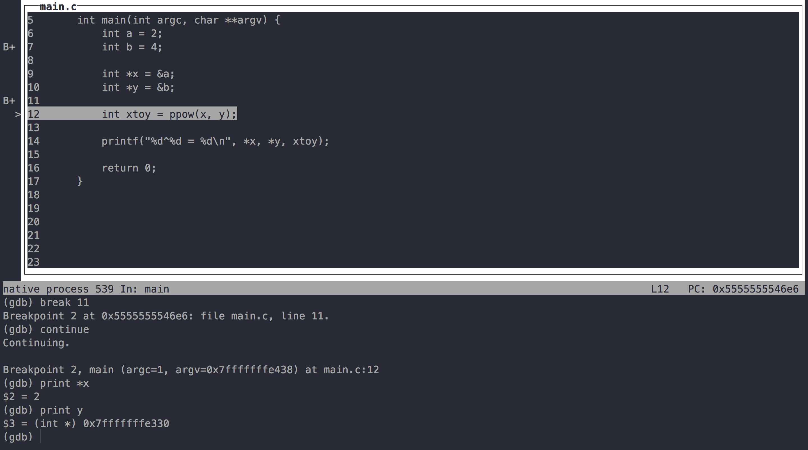

GDB, Valgrind, and Debugging
There are three commonly used debugging methods in this class.
printf- valgrind
- gdb
printf
First, printf, which you probably use all the time.
Imagine this program fragment, which is currently crashing.
We added the printf line to the program to determine if the program was crashing
during foo() or during bar(). If we see "foo complete", we can determine
that foo definitely completed.
However, if we do not see "foo complete," we cannot determine anything!
The C standard library may have buffered our standard output for us, so we need
to make the debugging print statement printf("foo complete\n");. The newline
encourages the C standard library to send the text to the display immediately.
It would be even better to print debugging information to stderr. This is a bit
advanced for right now, but you use a slightly different function, fprintf,
which lets us specify the destination. It's fairly simple:
fprintf(stderr, "foo complete\n");.
valgrind
After compiler warnings, valgrind is the first tool you should turn to whenever you're dealing with possible memory problems. It analyzes your program as it runs for memory errors and leaks.
Valgrind is very easy to use. All you do is call the program normally, but
prepend valgrind --leak-check=full to the beginning.
$ ./twecho hello world # Without valgrind
$ valgrind --leak-check=full ./twecho hello world # With valgrind
Your program runs completely normally, including letting you type in as you wish. At the end, whether your program crashed or exited normally, it prints out a status report, which reports two problems:
Memory Errors. These are illegal memory accesses, which may result in weird behavior, and crashes. If your program is crashing or acting up, identifying and fixing these are your second priority (number 1 is fixing compiler warnings).
What are examples of this? The simplest one is to imagine you have an array,
int arr[10];, and you try to set arr[11] = 11;. The compiler won't
warn you about it in any non-trivial case. However this is a memory error, and
may cause your problem to crash or act weird. Luckily valgrind will report it,
and even tell you which line of code it's happening on.
Lost Memory. You need to know about malloc and heap memory for this to make sense, but suffice it to say that you don't want to leak memory because the more memory you leak, the less memory other running programs will have to use.
Let's try it on a sample program, leaky.c:
#include <stdio.h>
#include <stdlib.h>
int main(int argc, char **argv) {
int *pint = (int *)malloc(sizeof(int));
if (pint == NULL) {
perror("malloc returned NULL"); /* Jae often defines a die() to do this */
exit(1);
}
*pint = 4;
printf("The value pointed to by pint is %d \n", *pint);
return 0;
}
Notice that it says you definitely lost 1 block of 4 bytes. The 1 block is from
the call to malloc on line 5. You can tell it's that file and line number
because it says (leaky.c:5).
To fix this program we need to free the memory block we malloc'd. Immediately
before the return, add free(pint);.
If you need valgrind to give you even more debugging information, you can add two more flags:
--show-reachable=yesgives more information about memory--track-origins=yesgives more information about uninitialized values.
Thus, a more verbose valgrind command is:
valgrind --leak-check=full --show-reachable=yes --track-origins=yes ./leaky
Note: You should ignore all suppressed errors. They're known problems with the standard library functions, and they're suppressed because there's nothing you can do about them.
Aside: why use -g when compiling?
This is the perfect time to discuss something we glossed over in the first
CLAC recitation. We told you to always compile your code with gcc -g. Why are
you using -g though?
-g embeds debugging information into the object files, and then into the
executable file. Debugging information includes which lines of source code are
being executed, what variables are called, and all sorts of good stuff like
that. Try recompiling leaky.c above, but without the -g flag. When you run
valgrind it will only report file names, not line numbers, for your errors.
Note: Valgrind is well-supported on Linux only. On OS X, clang's Address Sanitizer offers something similar. On Windows, there are many Visual Studio plugins for memory checking.
gdb
gdb is a debugger. It lets you stop time, look around your program, and maybe even change things. It's incredibly powerful, but can be a little intimidating. Don't worry, the basics aren't so bad.
gdb has very concise help, at any time just run help foo to get help about foo,
or just type help alone to list all commands.
Loading a program
To get started we just need to compile our program (using -g of course). You can go into our code directory, and simply call make. Then, run gdb -tui [program name]
In our case,
That opens gdb with a Text User Interface, TUI in short, which is a terminal interface which uses the curses library to show the source file, the assembly output, the program registers and GDB commands in separate text windows.
You need to give gdb instructions now, which is where it gets scary.
However it's really easy! Once you hit the enter key, you will see the source code of the main.c file.
Type run and it will start (include any arguments
after run if your program needs them, ie run hello world). You'll notice that
the program just runs straight through, but I promised you could stop time!
Breakpoints
The main way of stopping time is a breakpoint. Breakpoints are points in the source code at which gdb will pause running your program. Setting breakpoints is the first, most important, step in debugging.
There are three main types of breakpoints:
break 10to break on line 10 of the current source filebreak mymath.c:14to break on line 14 of mymath.cbreak multiplyto break at the very beginning of the functionmultiply
(gdb) break 10
Breakpoint 1 at 0x6de: file main.c, line 10.
(gdb) break mymath.c:14
Breakpoint 2 at 0x78d: file mymath.c, line 14.
(gdb) break multiply
Note: breakpoint 2 also set at pc 0x78d.
Breakpoint 3 at 0x78d: file mymath.c, line 15.
Type run and it will start again and stop at the break point. If you want to go to the next break point, all you need to do is type continue. While you're at each break point, you can print the value of a specific variable by print [variable name]

You can take your breakpoints to the next level with conditional breakpoints.
You set these up just like normal breakpoints, but add if expression to only
break if a certain thing is true. For example, if you have a loop that counts
down from 100, but you only want to break near the end, you could do
break 10 if i <= 2 to avoid breaking on the first 97 iterations.
Deleting breakpoints is easy. Typically, you can do clear and then the line
you used to create the breakpoint. You can also do info breakpoints to get a
list of your current breakpoints, and then delete i to get rid of the ith one.
Watchpoints
You can also set a watchpoint on a variable. For example, watch x stops
the program whenever the value of x changes. However you can only setup a
watchpoint after the variable has been declared, so you'll first need to set a
breakpoint.
Examining the program
Once you're stopped, you need to see what's going on. There are a few commands that can let you examine the program.
First, let's figure out what function you're in, and how you got here.
backtrace (or bt), prints the call stack, including arguments. This can be
especially useful in recursive programs.
frame [n] moves you to the nth call shown in the output of backtrace. This
can be helpful in determining how function arguments are generated.
print expression will print out an expression. For example print x prints
out x, or print *x prints out the pointer x after dereferencing it. We can
specify a format parameter with a slash, ie p/t x will print out x formatted
as binary. The parameters are:
dfor signed decimalufor unsigned decimalxfor hexadecimalofor octaltfor binaryafor addresscfor characterffor floating point
There is also a x command to print memory addresses and specify more complex
formatting and print multiple values. For example, if we had long y = -1; in
our program, and we were stopped in gdb, we could do x/tl &y to print out the
value of y in binary. We could also do x/2xi &y to print out the value of y in
hex,
info locals will print out all the locally defined variables. It doesn't
include everything you might think: in particular, it doesn't include function
parameters, so you'll have to use print argumentName to see those.
ptype variable prints the type of a variable! This can be nice with multiple
pointers and such. For example, ptype x will say x is an int. This has a more
powerful analog whatis expression, which lets you specify any arbitrary
expression, for example whatis &x, which will say int *.
Setting values
Aaaarg, that's so close, except x should be 3, not 2, at the points! Fear not! With gdb you can set values! Just run
set variable = expression, for example set x = 4, and it will change it for
you. (Unfortunately, it's not possible to change code.)
Resuming
Once you've stopped, after you're doing examining the code, you need to resume execution. There are basically 3 amounts that you can resume by. In order from smallest to largest they are:
step runs the code line by line, and steps into functions. That
means if your code calls foo() on the next line, you'll continue going line by
line through the code of foo.
next also runs the code line by line, but it goes over functions. So if you
call bar(), it will skip over the call and continue within this block of code.
Generally, for example, you want to use next over library functions.
You can combine step and next with a number, eg, step 4 to step 4 times at once.
continue resumes executing your program until you get to another breakpoint.
There are a few more esoteric ones, such as finish to wait for the return,
Control-C to send sigint, and kill to end it.
Summary: Essential Commands
breakline/file:line/functionrunbacktraceprintvariable/expressionstepnextcontinue
Tips
Almost all gdb commands can be abbreviated to a single letter. Instead
of typing break you can just type b, instead of continue, c, etc. If you
want to list all the breakpoints, you could type info breakpoints, but you
could also just type i b.
Pressing enter will repeat the most recent command. No longer do you need to
mash s or n!
Control-L is a common keyboard shortcut to clean up the screen. It can be helpful if your program outputs some weird stuff and it all looks janky. Also works in bash.
You can jump to arbitrary points in execution, but don't you already have enough rope to hang yourself?
-tui shows the source code in the top half. Use the arrow keys to navigate.
You can quit with quit, q, and Control-D typically.
Core Dumps and gdb
Sometimes your program will encounter a segmentation fault. You'll see
"Segmentation Fault (core dumped)" printed to the terminal. By default, this
"core dumped" message doesn't do anything. This is because by default core dump
files are limited to size 0. However, we can change this quite easily by running
ulimit -c unlimited. Now when we segfault, we'll get a file called "core" in
the working directory.
This "core" file provides a picture of the memory at the time the segfault was
encountered. Luckily all of these fancy UNIX tools work great together so we can
used gdb to help us do some detective work! By running gdb ./my_program core,
we're instructing gdb to load the memory picture at the time of the seg fault.
We can then navigate around using the gdb commands we just learned (like bt
and info locals) to figure out exactly what caused the segfault!
Example
It helps to have a concrete example in hand while doing this. Let's calculate 2^4, but let's do it the old fashioned way, where exponentiation is repeated multiplication, and multiplication is repeated addition.
We're going to define our general math functions in a file called mymath.c,
which of course has its associated mymath.h.
Then we'll start our program in main.c. To make things a little more
interesting, we're going to use some basic pointers. First we setup two basic
integers, a and b. Then we take the memory address of a, and store it in
the pointer-to-int x (and likewise with b and y).
Then we pass the pointers into our exponentiation function. It performs the appropriate number of multiplications, each of which requires an appropriate number of additions, and then return the value to main.
Main prints out 2^-1 = 16. What's going on? That's crazy!
Let's debug to find out!
Spoiler: in the exponentiation, we do (*y)--, which permanently changes y!
External Resources
- Dense, incredibly helpful gdb reference card
- Slightly slimmer gdb cheat sheet
- Look at Jae's emails "ANN: Doing lab 2", and "ANN: Debugging Tips"
- Official GDB guide
- Handy walkthrough pdf that covers unix basics, gcc, gdb, make, and basic shell